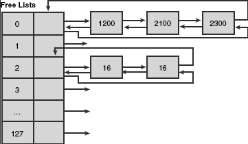
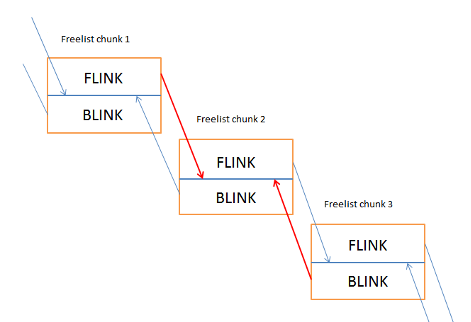

Backend allocator FreeList
The back-end allocator - Freelist
At offset 0x178 of the heap structure, we can see the start of the FreeList[] array. The FreeList contains a doubly linked list of chunks. They are doubly linked due to containing both flink and blink.

The above diagram shows that the freelist contains an indexed array of heap chunks ranging from 0-128. Any chunk sizes between 0 and 1016 (its 1016 because the maximum size is 1024 - 8 bytes of metadata) are stored according to their allocated unit size * 8. For example, say that I have a chunk of 40 bytes to free, then I would place the chunk at index 4 of the freelist (40/8).
If a chunk size was above 1016 ( 127 * 8 ) bytes, then it would be stored in the freelist[0] entry in numerical size ordering. Below is a description of the freelist chunk.
| click me | click me | click me | click me | click me | click me | click me |
|---|
| Headers | Self Size (0x2) | Prev Size (0x2) | Segment index (0x1) | Flag (0x1) | Unused (0x1) | Tag index (0x1) |
| flink/blink | Flink (0x4) | Blink (0x4) | | | | |
| Data | | | | | | |
Microsoft released some mitigations to prevent attacks on unlinking of the freelist entry, below is a short description of the mitigations.
Safe unlinking of the freelist: Safe unlinking is a protection mechanism implemented by Microsoft in Windows XP Sp2 and above. Essentialy it is an exploitation mitigation that attempts to prevent the generic write 4 technique as discussed in Heap Overflows for Humans 101. In this check, the previous chunks 'flink' points to our allocated chunk and the adjacent chunks blink points to our allocated chunk. Below is a description and diagram of the security mechanism in place.

Freelist chunk 1[flink] == Freelist chunk 2 && Freelist chunk 3[blink] ==Freelist chunk 2